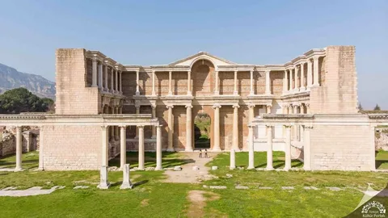

Tarihi Bilgiler
Sardes antik kenti Lidya Krallığı'na başkentlik yapmış çok önemli bir yer. Manisa'nın Salihli ilçesinde bulunuyor. Burayı önemli yapan en büyük özellik ise dünyada paranın ilk kez burada basılmış olması.
Eskiden kentin içinden akan çayda altın tozları varmış. Lidyalılar bu altınları toplayıp atölyelerde işlemişler ve altına gümüş karıştırarak ilk paraları yapmışlar. Hatta çok zengin olduğu söylenen Kral Karun da bu şehrin en ünlü kralıymış.
Ayrıca ünlü Kral Yolu da buradan başlıyor. Bu yol sayesinde Sardes o dönemde ticaretin ve kültürün merkezi haline gelmiş.
"Lidyalılar, altın ve gümüş sikke basan ve kullanan ilk insanlardır."
- Tarihçi Herodot
Gezilecek Önemli Yapılar
Kentin içinde günümüze kadar ulaşan bazı kalıntılar:
- Gymnasium: Eğitim ve spor yapılan büyük kompleks.
- Artemis Tapınağı: O dönemin en büyük tapınaklarından.
- Sardes Sinagogu: Çok büyük ve tarihi bir tapınak.
- Altın Atölyeleri: Paranın basıldığı yerler.
Kentin Özeti
- Konum:
- Manisa / Salihli
- Medeniyet:
- Lidya Krallığı
- En Ünlü Kral:
- Kral Karun (Kroisos)
- Önemi:
- Paranın icadı ve Kral Yolu
Tarihsel Süreç
| Dönem Adı | Neler Yaşandı? |
|---|---|
| Lidya Krallığı | İlk paralar burada basıldı. |
| Pers Dönemi | Şehir yönetim merkezi oldu. |
| Helenistik Dönem | Tapınak inşaatı başladı. |
| Roma Dönemi | Büyük yapılar tamamlandı. |